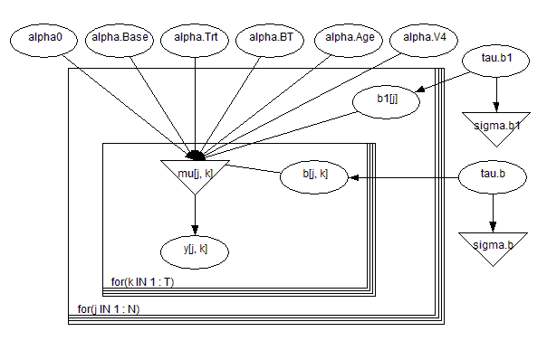
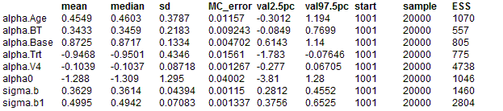

Epilepsy: repeated measures on Poisson counts
Breslow and Clayton (1993) analyse data initially provided by Thall and Vail (1990) concerning seizure counts in a randomised trial of anti-convulsant therpay in epilepsy. The table below shows the successive seizure counts for 59 patients. Covariates are treatment (0,1), 8-week baseline seizure counts, and age in years. The structure of this data is shown below
We consider model
III of Breslow and Clayton (1993), in which Base is transformed to log(Base/4) and Age to log(Age), and a Treatment by log(Base/4) interaction is included. Also present are random effects for both individual subjects b
1j and also subject by visit random effects b
jk to model extra-Poisson variability within subjects. V
4 is an indicator variable for the 4th visit.
y
jk ~ Poisson(
μjk)
log
μjk =
α0 +
αBase log(Base
j / 4) +
αTrtTrt
j +
αBTTrt
j log(Base
j / 4) +
αAge Age
j +
αV4V
4 + b1
j + b
jk b1
j ~ Normal(0,
τb1)
b
jk ~ Normal(0,
τb)
Coefficients and precisions are given independent "noninformative'' priors.
The graphical model is below

The model shown above leads to a Markov chain that is highly correlated with poor convergence properties. This can be overcome by standardizing each covariate about its mean to ensure approximate prior independence between the regression coefficients as show below:
BUGS language for epil example model III with covariate centering
(centering interaction term BT about mean(BT)):
model
{
for(j in 1 : N) {
for(k in 1 : T) {
log(mu[j, k]) <- a0 + alpha.Base * (log.Base4[j] - log.Base4.bar)
+ alpha.Trt * (Trt[j] - Trt.bar)
+ alpha.BT * (BT[j] - BT.bar)
+ alpha.Age * (log.Age[j] - log.Age.bar)
+ alpha.V4 * (V4[k] - V4.bar)
+ b1[j] + b[j, k]
y[j, k] ~ dpois(mu[j, k])
b[j, k] ~ dnorm(0.0, tau.b); # subject*visit random effects
}
b1[j] ~ dnorm(0.0, tau.b1) # subject random effects
BT[j] <- Trt[j] * log.Base4[j] # interaction
log.Base4[j] <- log(Base[j] / 4) log.Age[j] <- log(Age[j])
}
# covariate means:
log.Age.bar <- mean(log.Age[])
Trt.bar <- mean(Trt[])
BT.bar <- mean(BT[])
log.Base4.bar <- mean(log.Base4[])
V4.bar <- mean(V4[])
# priors:
a0 ~ dnorm(0.0,1.0E-4)
alpha.Base ~ dnorm(0.0,1.0E-4)
alpha.Trt ~ dnorm(0.0,1.0E-4);
alpha.BT ~ dnorm(0.0,1.0E-4)
alpha.Age ~ dnorm(0.0,1.0E-4)
alpha.V4 ~ dnorm(0.0,1.0E-4)
tau.b1 ~ dgamma(1.0E-3,1.0E-3); sigma.b1 <- 1.0 / sqrt(tau.b1)
tau.b ~ dgamma(1.0E-3,1.0E-3); sigma.b <- 1.0/ sqrt(tau.b)
# re-calculate intercept on original scale:
alpha0 <- a0 - alpha.Base * log.Base4.bar - alpha.Trt * Trt.bar
- alpha.BT * BT.bar - alpha.Age * log.Age.bar - alpha.V4 * V4.bar
}
Data
list(N = 59, T = 4,
y = structure(.Data = c( 5, 3, 3, 3,
3, 5, 3, 3,
2, 4, 0, 5,
4, 4, 1, 4,
7, 18, 9, 21,
5, 2, 8, 7,
6, 4, 0, 2,
40, 20, 21, 12,
5, 6, 6, 5,
14, 13, 6, 0,
26, 12, 6, 22,
12, 6, 8, 4,
4, 4, 6, 2,
7, 9, 12, 14,
16, 24, 10, 9,
11, 0, 0, 5,
0, 0, 3, 3,
37, 29, 28, 29,
3, 5, 2, 5,
3, 0, 6, 7,
3, 4, 3, 4,
3, 4, 3, 4,
2, 3, 3, 5,
8, 12, 2, 8,
18, 24, 76, 25,
2, 1, 2, 1,
3, 1, 4, 2,
13, 15, 13, 12,
11, 14, 9, 8,
8, 7, 9, 4,
0, 4, 3, 0,
3, 6, 1, 3,
2, 6, 7, 4,
4, 3, 1, 3,
22, 17, 19, 16,
5, 4, 7, 4,
2, 4, 0, 4,
3, 7, 7, 7,
4, 18, 2, 5,
2, 1, 1, 0,
0, 2, 4, 0,
5, 4, 0, 3,
11, 14, 25, 15,
10, 5, 3, 8,
19, 7, 6, 7,
1, 1, 2, 3,
6, 10, 8, 8,
2, 1, 0, 0,
102, 65, 72, 63,
4, 3, 2, 4,
8, 6, 5, 7,
1, 3, 1, 5,
18, 11, 28, 13,
6, 3, 4, 0,
3, 5, 4, 3,
1, 23, 19, 8,
2, 3, 0, 1,
0, 0, 0, 0,
1, 4, 3, 2), .Dim = c(59, 4)),
Trt = c( 0, 0, 0, 0, 0, 0, 0, 0, 0, 0,
0, 0, 0, 0, 0, 0, 0, 0, 0, 0,
0, 0, 0, 0, 0, 0, 0, 0, 1, 1,
1, 1, 1, 1, 1, 1, 1, 1, 1, 1,
1, 1, 1, 1, 1, 1, 1, 1, 1, 1,
1, 1, 1, 1, 1, 1, 1, 1, 1),
Base = c( 11, 11, 6, 8, 66, 27, 12, 52, 23, 10,
52, 33, 18, 42, 87, 50, 18,111, 18, 20,
12, 9, 17, 28, 55, 9, 10, 47, 76, 38,
19, 10, 19, 24, 31, 14, 11, 67, 41, 7,
22, 13, 46, 36, 38, 7, 36, 11,151, 22,
41, 32, 56, 24, 16, 22, 25, 13, 12),
Age = c(31,30,25,36,22,29,31,42,37,28,
36,24,23,36,26,26,28,31,32,21,
29,21,32,25,30,40,19,22,18,32,
20,30,18,24,30,35,27,20,22,28,
23,40,33,21,35,25,26,25,22,32,
25,35,21,41,32,26,21,36,37),
V4 = c(0, 0, 0, 1))
Inits for chain 1
list(a0 = 1, alpha.Base = 0, alpha.Trt = 0, alpha.BT = 0,
alpha.Age = 0, alpha.V4 = 0, tau.b1 = 1, tau.b =1)
Inits for chain 2
list(a0 = 1, alpha.Base = 1, alpha.Trt = 1, alpha.BT = 1,
alpha.Age = 1, alpha.V4 = 1, tau.b1 = 0.1, tau.b =0.1)
Results
These estimates can be compared with those of Breslow and Clayton (1993) who reported
α0 = -1.27 +/- 1.2,
αBase = 0.86 +/- 0.13,
αTrt = -0.93 +/- 0.40,
αBT = 0.34 +/- 0.21,
αAge = 0.47 +/- 0.35,
αV4 = -0.10 +/- 0.90
σb1 = 0.48 +/- 0.06
σb = 0.36+/0.04.